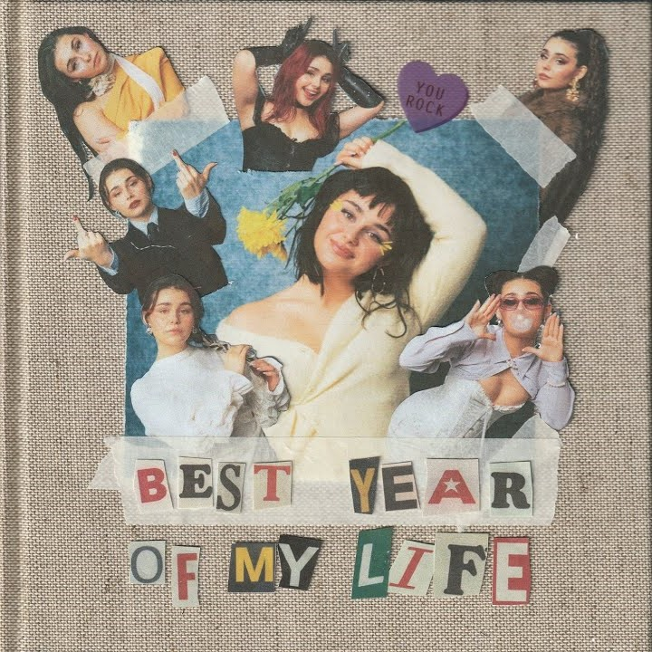

Norway’s “Queen of Kings,” Alessandra Mele, releases debut album, “Best Year Of My Life”: A Review
by CC - February 21, 2024

Italian-Norwegian artist Alessandra Mele is best well-known for representing Norway in the 67th edition of the Eurovision Song Contest in 2023 with her viral hit song, “Queen of Kings.” Mele ended up placing 5th in the Grand Finals out of 26 qualifiers and a total of 37 entries. Since then, the spunky singer has released 8 different remixes of “Queen of Kings,” as well as 4 other singles. Including the original song, all 9 versions of the Eurovision entry have gathered over a total of 170 million Spotify streams (as of February 21st 2024). Mele is constantly striving towards new heights, creating new music and furthering her career. She has just finished up her first European tour, doing shows in over a dozen different countries. The show taking place at The Academy in London marked the release date of her new album, “Best Year Of My Life.”
“Best Year Of My Life” was released on February 16th at midnight in local times and is the artist’s first ever album, marking a new era for Alessandra Mele’s career. The album contains 7 total songs, 5 of which have appeared previously as singles, including “Queen of Kings.” Below are reviews of each song from the album as well as photos representing them all. These will be reviewed in the running order of the album.
Alessandra Mele’s first-ever album absolutely surpassed expectations. Fitted with a self-empowerment theme that feels true to herself and to others, she truly is changing the way so many people think about themselves. Mele will prove to be a force to be reckoned with as she continues to grow and make music. We excitedly anticipate her other unreleased songs that have been teased.
To stream the album on YouTube and Spotify, click below:
Spotify
YouTube
Italian-Norwegian artist Alessandra Mele is best well-known for representing Norway in the 67th edition of the Eurovision Song Contest in 2023 with her viral hit song, “Queen of Kings.” Mele ended up placing 5th in the Grand Finals out of 26 qualifiers and a total of 37 entries. Since then, the spunky singer has released 8 different remixes of “Queen of Kings,” as well as 4 other singles. Including the original song, all 9 versions of the Eurovision entry have gathered over a total of 170 million Spotify streams (as of February 21st 2024). Mele is constantly striving towards new heights, creating new music and furthering her career. She has just finished up her first European tour, doing shows in over a dozen different countries. The show taking place at The Academy in London marked the release date of her new album, “Best Year Of My Life.”
“Best Year Of My Life” was released on February 16th at midnight in local times and is the artist’s first ever album, marking a new era for Alessandra Mele’s career. The album contains 7 total songs, 5 of which have appeared previously as singles, including “Queen of Kings.” Below are reviews of each song from the album as well as photos representing them all. These will be reviewed in the running order of the album.
Best Year Of My Life
The title track for the well-anticipated album has more than lived up to its expectations. Having performed it at many of her shows while it was still unreleased, Mele massively increased the hype within her fanbase for its release. The song starts off with an elegant guitar melody that practically makes you feel lighter than air. However, that doesn’t change the beauty and pain of the lyrics that come next. Mele looks back on the past year of her life, where, according to the composition written by herself, Johan Lindbrandt, and Phoebe Ryan, she went through a whirlwind of emotions. Although friends were lost along the way, or her parents split up, she made incredible memories, and Mele’s “done things [she’ll] never forget.” You can never change the past, but you can look back on it and appreciate how it changed you as a person, and truly made it the best year of your life.Narcissist
Mele’s latest single, “Narcissist,” was released on January 5th, 2024 as her first release this year. The powerful song was written by Mele, as well as Clara Mae and Carl-Philip Ström, as a reflection of past toxic relationships. In both Verse 1 and 2, she talks about how she would give her previous partners everything, and they wouldn’t give anything in return. Mele accuses her past lover of being a narcissist, only using her as a “new flex.” The song takes a turn when the singer-songwriter finally has enough and leaves, finally taking control for herself and admitting “even I can be a narcissist.”Pretty Devil
As the third song on the track and Alessandra Mele’s second biggest released song, “Pretty Devil” is an upbeat song about being captivated by another person, describing how the person’s movements and appearance is incredibly attractive. She describes the person’s movements as “elegant” and proceeds to mention how they are making her question her innocence. However, this isn’t just a song about captivation, instead being used as a song of empowerment for those who have a lot of insecurities. Mele just wants the “pretty devil” to be able to look at herself and to love it. It is written by Mele with the help of Audun Agnar, Einar Eriksen Kvaløy, Ludwig Gassner, and Margrethe Frich.Mama I’m Sorry
“Mama I’m Sorry” is the only other previously released single on the album, however it had been teased many times by Mele during her “Queen of Kings” tour, where she would go into the crowd and delicately sing the beautiful ballad. Written by Mele, alongside Elizabeth Makris, ISELIN, and Tormod Løkling, this track is an emotional letter to her mother, apologizing for all the times she has put herself down while her mother always stands by her side and supports her. The journey Mele goes through is visible in the song, as she goes from hating herself to finally believing her mother and loving the person she is. In the end, Mele admits to her mother, “So, mama, don’t worry. I’ll be okay thanks to you.”Bad Bitch
Even before the lyrics come in, you can feel exactly the type of message Mele is trying to get across as soon as you listen to it: a mix of “confidence” and “you better watch out.” Yet another piece about self-empowerment, Mele talks about how this girl she saw at the bar is “a perfect masterpiece” and describes her as a shining diamond. We then find out that this mystery woman is actually Mele herself. She even shuts down those who may accuse her of being “self-obsessed,” talking about the rough journey to get to where she is today with her self-esteem. Songwriters Mele, Kvaløy, Makris and Gassner make reappearances on this track, this time joined by Cate Downey, Gustav Nisbel Fjäll, and Trym Stokke.Heavy
Mele’s message in “Heavy” is a letter to anyone and everyone who has ever struggled in life. It is a beautiful ballad about watching someone that you love so much battle pain, depression, anything that might get you down, and wanting nothing more to support them. Mele expresses how she will be there through the rough and messy parts in life, whether it’s “another failed exam or a sleepless night,” where we no longer have any control and it seems to all fall apart. But no matter what, Mele expresses that her loved one will never have to be alone, that she will “take the weight if you let [her].” This love letter is one that should be shared to everyone, whether a lover, family, or friend. These incredible lyrics were written by Mele, Makris, Gassner, Josh McClelland, Kella Armitage, and James Birt.Queen of Kings
As the final track of the album and debut single, Mele’s “Queen of Kings” is regarded to as her most iconic song, especially after it went viral on TikTok as well as being the 2023 Norwegian entry for Eurovision. Alongside Mele, this track was written by Henning Olerud, Linda Dale, and Stanley Ferdinandez. This empowering song features elements of electropop with powerful vocals. The referenced “Queen” in the song isn’t a queen of royalty, but rather a queen of oneself. Mele sings about this powerful, spirited girl who overcomes any obstacle in her way, saying “nothin’ in this world can stop the spread of her wings.” This determined queen doesn’t let anything stop her, and is nothing but herself.Alessandra Mele’s first-ever album absolutely surpassed expectations. Fitted with a self-empowerment theme that feels true to herself and to others, she truly is changing the way so many people think about themselves. Mele will prove to be a force to be reckoned with as she continues to grow and make music. We excitedly anticipate her other unreleased songs that have been teased.
To stream the album on YouTube and Spotify, click below:
Spotify
YouTube
Who Are We?
We're a group of Eurovision fans from the Americas, passionate about connecting European music to our local communities. Our team is made of content creators, translators, media editors, and more!
Join Us!